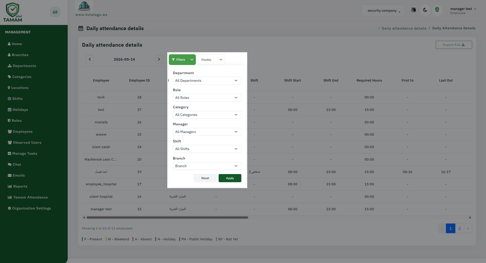

Applying filters before exporting helps ensure the early/late check-in and check-out report contains only the most relevant data. This avoids manual cleanup and makes the output easier to analyze.

Step 1: Open the Attendance Report
Choose the early/late check-in and check-out report from the attendance reports list. This report focuses on deviations from scheduled shift times.
Step 2: Select the Date Range
Set the correct reporting period, whether daily, weekly, or monthly. The date range determines how much attendance data is included in the exported file.
Step 3: Apply Employee Filters
Filter by employee, employee group, department, or location. This is useful for reviewing only the team or area you are responsible for.
Step 4: Set Early/Late Criteria
Adjust the report settings to include only early check-ins, late check-ins, or early/late check-outs. These criteria help you identify patterns and exceptions.
Step 5: Export Clean Data
Once filters are set, export the report. The output will contain the exact attendance entries you selected, so less post-processing is needed.
Tip: Use filters to generate targeted exports for leadership reviews, payroll reconciliation, or compliance audits.